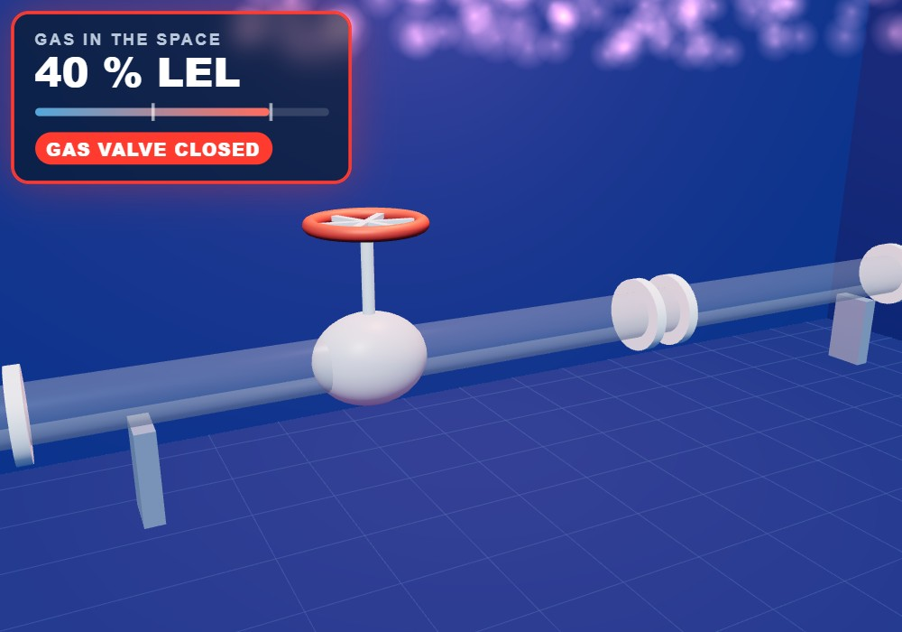
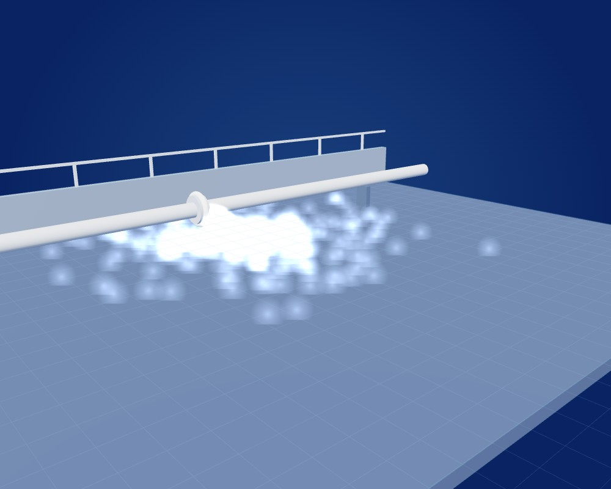
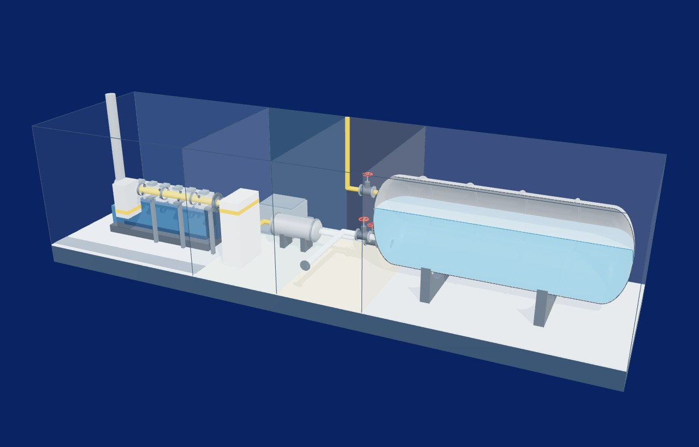

3D
3D1Part A · check what you learned
The detector reads 22 % LEL. What is happening?
Choose one.
How sure?
Two things you will do in every task. Nothing here is scored.
Drag it - or tap it, then tap the box.
3DChoose one.
Choose all that are right.
 Card 3 of 3
Card 3 of 3
Card 2 of 3
Card 1 of 3Tap a card - it goes to the next empty place. Tap a placed card to send it back.
Tap a space, then what it holds - a line joins them. Tap a line's end to undo it.

Tap the placeTap right on it. You can tap again to move your mark.
Choose one.
Tap a line to circle it, tap again to take it off.
3DTurn the knob, or use − and +.